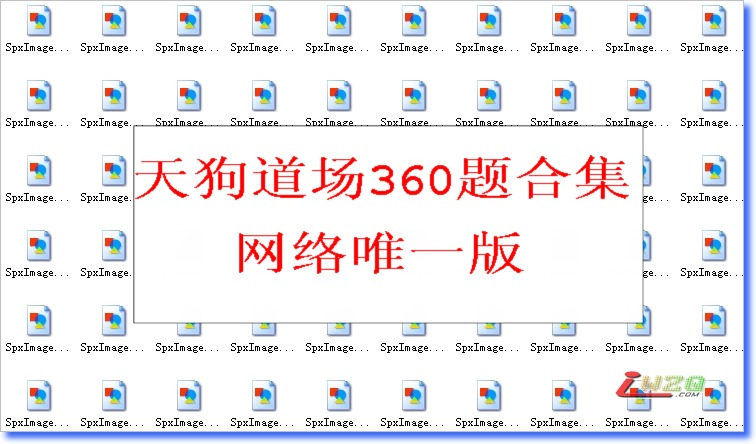

日本连珠天狗道场【全】360题，纯图版【共9M】
#1 日本连珠天狗道场【全】360题，纯图版【共9M】 作者：有志青年 发表时间：2007-12-30 16:23:23
此次发布的360题的天狗道场和之前的120题比较起来，应该是目前网上能找到的最全的了。
当然此次题目的发布要感谢本站网友的大力支持。
本着共享的精神，我们有了越来越多的五子棋相关资料。
来此下载的朋友们，如果您有时间和精力，希望能在方便的时候将这些题目的答案发布出来大家共享！

#2 Re:日本连珠天狗道场【全】360题，纯图版【共9M】 作者：nara 发表时间：2007-12-31 11:40:02
非常感谢有志,您辛苦了啊
#3 Re:日本连珠天狗道场【全】360题，纯图版【共9M】 作者：yidefei 发表时间：2008-1-2 20:07:14
有志的速度很快哪，这么快就给你理出来了
#4 Re:日本连珠天狗道场【全】360题，纯图版【共9M】 作者：隐藏菜系 发表时间：2008-1-3 20:38:46
好同志啊！！辛苦了！：）#5 Re:日本连珠天狗道场【全】360题，纯图版【共9M】 作者：天上人间12 发表时间：2008-1-7 23:06:49
好，下了去做做看。#6 Re:日本连珠天狗道场【全】360题，纯图版【共9M】 作者：lxlzwd 发表时间：2008-1-12 15:35:54
谢谢大哥!!!
#7 Re:日本连珠天狗道场【全】360题，纯图版【共9M】 作者：笨蛋020 发表时间：2008-1-24 15:25:56
非常感谢，就这话#8 Re:日本连珠天狗道场【全】360题，纯图版【共9M】 作者：eppita 发表时间：2008-1-24 21:14:51
非常感谢#9 Re:日本连珠天狗道场【全】360题，纯图版【共9M】 作者：红运 发表时间：2008-3-8 22:55:23
谢谢，这样偶就有一段书简不用眨巴眨巴眼睛到处收罗杂志了。辛苦有志！#10 Re:日本连珠天狗道场【全】360题，纯图版【共9M】 作者：风炎 发表时间：2008-5-22 15:44:32
 有题目做了，真好~！
有题目做了，真好~！
请问有答案吗？
#11 Re:Re:日本连珠天狗道场【全】360题，纯图版【共9M】 作者：有志青年 发表时间：2008-5-22 17:39:35
引用：天狗道场的题目比较难，目前还没有人全部做出来，可能题目多也是一个原因吧。你可以到本站的在线教学中查看土豆老师对一些题目的讲解。
原文由 风炎 发表于 2008-5-22 15:44:32 :
请问有答案吗？
#12 Re:日本连珠天狗道场【全】360题，纯图版【共9M】 作者：无棋 发表时间：2008-5-26 19:51:50
好东西，谢谢分享，收藏了#13 Re:日本连珠天狗道场【全】360题，纯图版【共9M】 作者：屏蔽 发表时间：2008-5-30 11:01:52
要是没有答案的话，我可能暑假做第二遍的时候给弄上来吧。现在做第一遍只是练练计算力，找找感觉而已。
现在做了100多道题目，感觉有些问题——题目分类上面很不清晰。
开始是比较难的连攻胜（也就是我对《天狗道场》最原始的印象）；
然后有一些“文字/图形题目”，这就是完全练观察力和VCF了；
然后还有一些两手胜，不知道的肯定会觉得怎么会有这么简单的习题；
最后一部分题目是“三手胜”的水平，有些就是原题。
先分好类，做起来才有收获。
#14 Re:日本连珠天狗道场【全】360题，纯图版【共9M】 作者：oddgod 发表时间：2008-5-31 2:00:04
非常好的习题啊！有志辛苦啦～
#15 Re:日本连珠天狗道场【全】360题，纯图版【共9M】 作者：旅行者 发表时间：2008-6-6 22:34:45
不晓得怎么用啊？#16 Re:日本连珠天狗道场【全】360题，纯图版【共9M】 作者：星或月 发表时间：2008-6-8 2:15:12
非常感谢！！#17 Re:日本连珠天狗道场【全】360题，纯图版【共9M】 作者：我想学棋 发表时间：2008-6-17 22:02:36
哈,谢谢老师
#18 Re:日本连珠天狗道场【全】360题，纯图版【共9M】 作者：赵吹雪 发表时间：2008-6-19 20:23:10
提高的好题目啊，谢谢有知青年
#19 Re:日本连珠天狗道场【全】360题，纯图版【共9M】 作者：晏如庐 发表时间：2008-7-1 9:36:34
很好的练习题，有时间一定认真学做．
#20 Re:日本连珠天狗道场【全】360题，纯图版【共9M】 作者：菜巫妖 发表时间：2008-7-5 13:25:01
太强了，有这么多题，真的好全，非常感谢［ 雨一直下 于 2009-8-26 16:50:57 时奖励此帖[金币加 20 威望加1］
#21 Re:日本连珠天狗道场【全】360题，纯图版【共9M】 作者：石投 发表时间：2008-7-16 22:34:07
太谢谢了.希望不要太难.我会好好学习的
［ 雨一直下 于 2009-8-26 16:51:34 时奖励此帖[金币加 20 威望加1］
#22 Re:日本连珠天狗道场【全】360题，纯图版【共9M】 作者：无棋 发表时间：2008-7-17 7:13:21
有没有答案啊，有几道题一直做不出#23 Re:日本连珠天狗道场【全】360题，纯图版【共9M】 作者：南京小飞机 发表时间：2008-7-17 14:28:08
辛苦辛苦！
#24 Re:日本连珠天狗道场【全】360题，纯图版【共9M】 作者：傻瓜傻瓜 发表时间：2008-7-18 16:16:30
图片下载了怎么用?［ 雨一直下 于 2009-8-26 16:51:56 时奖励此帖[金币加 20 威望加1］
#25 Re:日本连珠天狗道场【全】360题，纯图版【共9M】 作者：唐门小虎 发表时间：2009-7-9 9:45:52
请问谁有答案啊，我想要，545202126，谢谢#26 Re:日本连珠天狗道场【全】360题，纯图版【共9M】 作者：起航 发表时间：2009-8-17 0:48:01
呵呵，下载回去做做。#27 Re:日本连珠天狗道场【全】360题，纯图版【共9M】 作者：我能我能我能 发表时间：2009-8-24 16:06:25
［ 雨一直下 于 2009-8-26 16:51:19 时奖励此帖[金币加 20 威望加1］
#28 Re:日本连珠天狗道场【全】360题，纯图版【共9M】 作者：茗弈梓轩 发表时间：2009-9-16 14:43:48
辛苦有志哥了，
#29 Re:日本连珠天狗道场【全】360题，纯图版【共9M】 作者：总要注册 发表时间：2009-10-5 18:23:53
受益中 谢谢楼主辛苦劳动！#30 Re:日本连珠天狗道场【全】360题，纯图版【共9M】 作者：清凉江 发表时间：2009-10-20 13:56:35
暗暗暗暗暗暗暗暗暗暗#31 Re:日本连珠天狗道场【全】360题，纯图版【共9M】 作者：连珠谱 发表时间：2012-4-22 1:40:58
非常的感谢
#32 Re:日本连珠天狗道场【全】360题，纯图版【共9M】 作者：超级菜鸟徒弟 发表时间：2012-11-4 10:25:57
这个感谢是必须的
#33 Re:日本连珠天狗道场【全】360题，纯图版【共9M】 作者：继续沉醉 发表时间：2012-11-30 21:27:41
共享的精神？咱能不能把棋谱库打个完整包共享一下啊
#34 Re:日本连珠天狗道场【全】360题，纯图版【共9M】 作者：平凡人生 发表时间：2013-9-20 22:59:26
很棒，辛苦了。#35 Re:日本连珠天狗道场【全】360题，纯图版【共9M】 作者：爱好者友 发表时间：2013-9-23 18:29:11
谢啦。#36 Re:日本连珠天狗道场【全】360题，纯图版【共9M】 作者：华夏小宝 发表时间：2013-11-11 12:36:01
就是右下角多了一个子（提示谁先行），出发点是好的，但是影响计算啊。大家不觉得么？